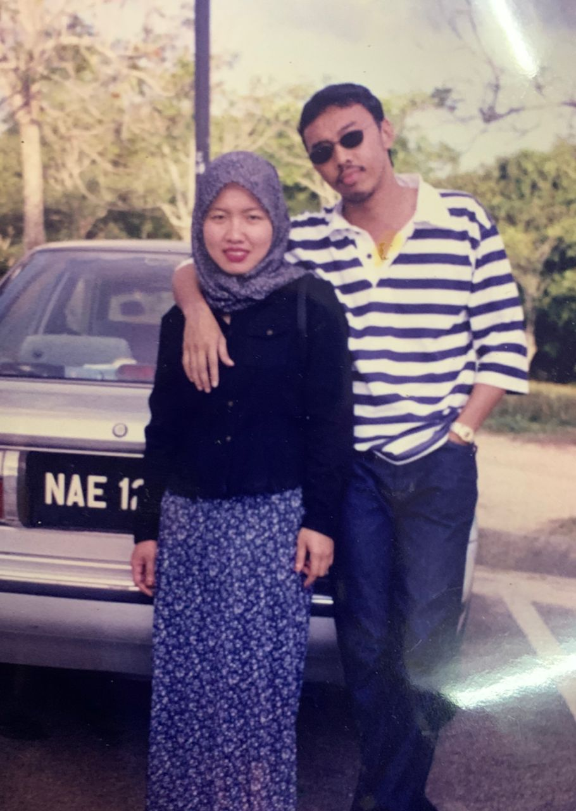
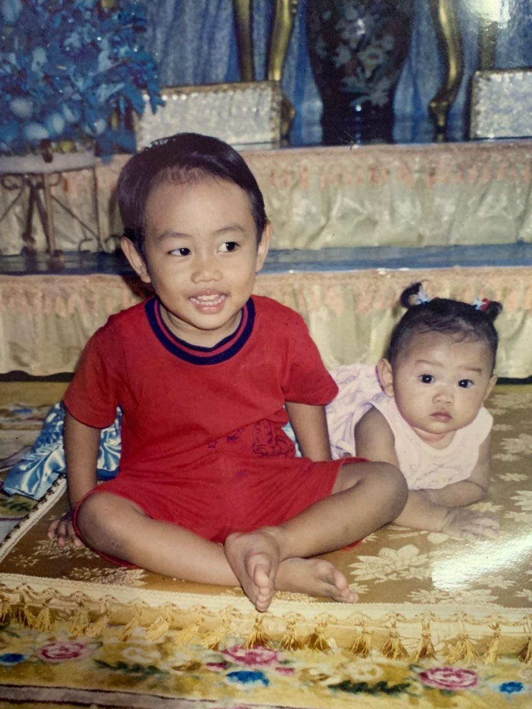
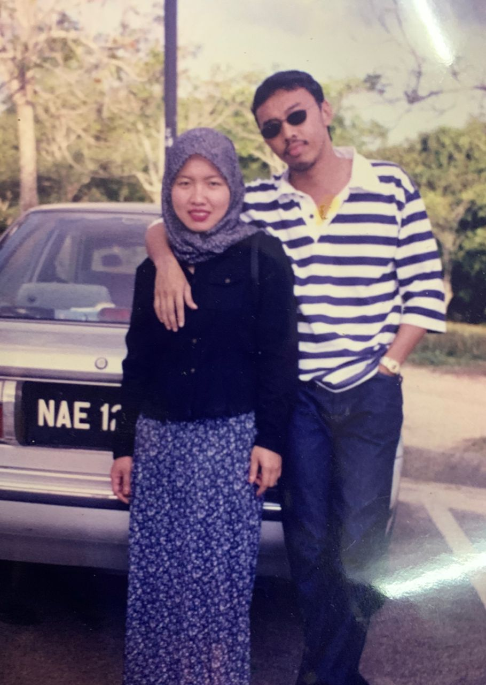
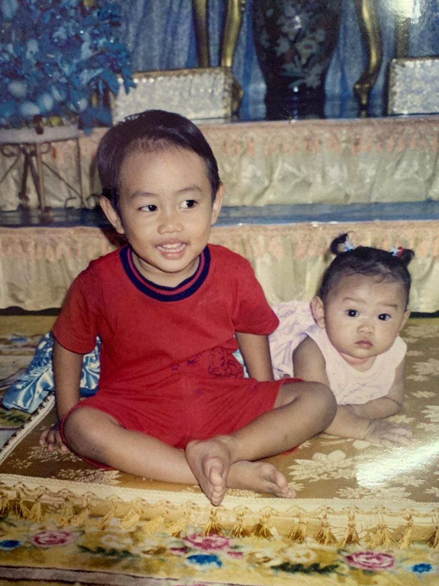

ABOUT ME!
Hello Madame!
My name is Nur Anis Farhana binti Mohd Zaifarul Azman, and I am 21 years old. I come from a loving family of five, and I’m the middle child with the special title of being the only princess among my siblings. I currently live in Port Dickson, but I spent most of my childhood growing up in Seremban. I moved to Port Dickson when I was 16 years old. Since then, this beautiful town has become a place I proudly call home. The move marked a new chapter in my life, filled with growth and meaningful experiences. In my free time, I enjoy singing karaoke, playing badminton, and going hiking. Hiking used to be quite challenging for me due to my health conditions like low blood pressure and anemia I even fainted a few times. But recently, I’ve been able to complete hikes without fainting, which I see as a proud personal achievement. It reminded me of how far I’ve come and how strong I can be. My friends often describe me as cheerful, friendly, and hardworking. I love making others smile and bringing positive energy wherever I go. I believe in giving my best in everything I do, and I always try to stay kind, motivated, and open to learning. Life is full of lessons, and I’m excited to keep growing with each new step I take.
MY CHILDHOOD
 


